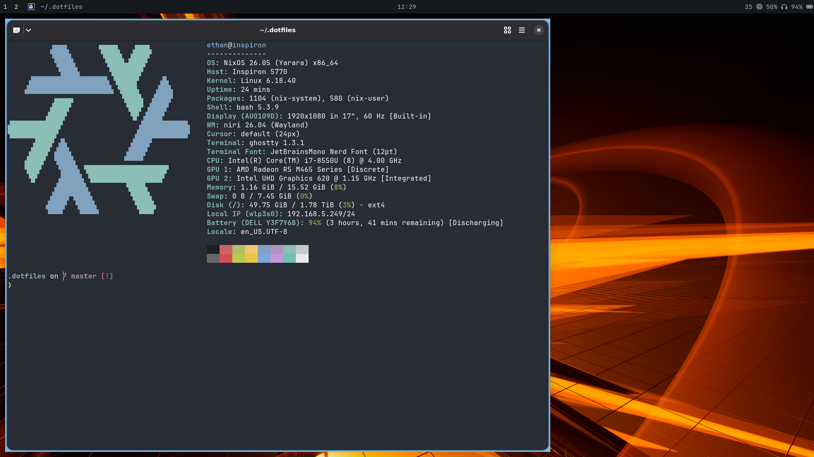

cat ./08-12-26.txt
/----+
| title: i'm switching to nixos!
\----+
I've been using arch for a while, but i finally decided to switch to something reproducible.
you can see my rough dots repo here!
i'm using niri right now.
it's far from finished and there's more to come :D
screenshot of it in action --\
|
__|__
\ /
\ /
v
